Prague, Czech Republic
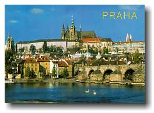
|
Prague, Czech Republic 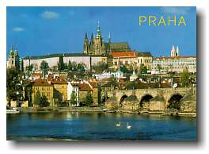 |
|
Trip #8: Saturday July 17 to Monday July 19, 1999 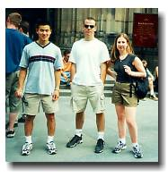Ryan, Karyn, and I left Friday night on a night train to Prague. Unfortunately, so did hundreds of others. The train was packed and reminiscent of Nazi movies when people were crammed into trains to be transported away. Once boarded, moving was a difficult task. Bathroom? Forget it. Good thing Karyn and I had reservations. But of course, getting to our seats was another story. Poor Ryan didn’t have a reservation and had to sit on the floor among obnoxious Americans for most of the trip. Prague was great. The hostel we stayed at (Hostel Boathouse) was no exception. It was a backpacker’s dream. Friendly people in a relaxed atmosphere. Most people that end up at this hostel have a hard time leaving. Messages on the wall indicated that numerous people extended their trip significantly longer than initially planned, including a couple of Canadians who planned to stay for 2 weeks, but ended up staying for 12.
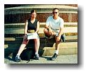The cost of staying in Prague added to the attractiveness of staying longer. Compared to Germany, prices here are rock bottom. However, word on the street says that inflation has hit hard on Prague due to tourists. |
|
One morning, as I went to grab breakfast at the hostel, sitting in the corner was the captain of my 3rd year University hockey team, Jonathan. I couldn’t believe it. After 3rd year hockey, we rarely ran into each other again at University, but we met up in Europe. 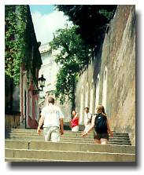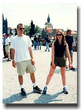Whether we were just hanging out at the hostel, touring Prague’s castle, walking through Wenceslas Square, the atmosphere in Prague was great. And it must be the most beautiful city at night. The colourful buildings/castles (a common architectural theme in Prague) gleamed at night with all the lights shinning on them. |
|
Saturday night, the crew from the hostel went to a local bar, Joe’s Garage. I got to know several wacko/crazy travelers. Kevin the crazy Californian is travelling from city to city, staying (at most) for a single night at each. Cathy and Catherine were from Seattle and they like living on bread and candy when they find themselves in an expensive city. For them, visiting Prague was more of a nutritional necessity than anything else. There were 2 short girls from Chicago who seemed to know everyone at the bar, even though that was their first night in Prague. Dave the Aussie and Chris the Californian completed the crew. 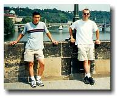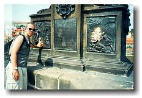The most touristy area in Prague is Charles Bridge. A pedestrian bridge full of street vendors and painters. We crossed this bridge numerous times; many times bumping into people from the hostel. In the middle of the bridge is a statue with 5 stars on it. "If you make a wish with a finger on each star, you will return to Prague." The stars were so high on the statue that I’d have to get my climbing gear to touch them. Well, that in itself will make me return. 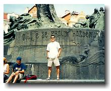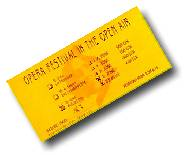We saw most sights by foot, which included Josefov (Prague’s historic Jewish neighborhood), Old Town Square, and churches. And believe it or not, I went to go see an Opera. This event was shared with Karyn and a couple of Canadians that we met at the hostel, Becky and (don’t ask me to pronounce his name) Witec. I’m crediting Prague as the place where I saw my first Opera. Could be the last as well. I certainly won’t be subscribing to an Opera magazine. Perhaps reading the wrong synopsis before hand put an unfair negative opinion towards to whole show. 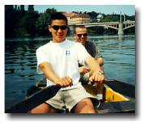On Sunday, a good hour was spent on a canoe on Vltava River just chilling out. Soon after, Karyn, myself, and Prague said goodbye to Ryan, who had to return to work on Monday. Poor kid. Karyn and I were both on our 1 week holiday, and although we both wanted to stay in Prague longer, our limited time off work forced us both to continue on. Monday morning, we separated. Karyn was off to Olamouc (another city in the Czech Republic), while I was destined for Vienna. |
 johnnyo@canada.com
johnnyo@canada.com